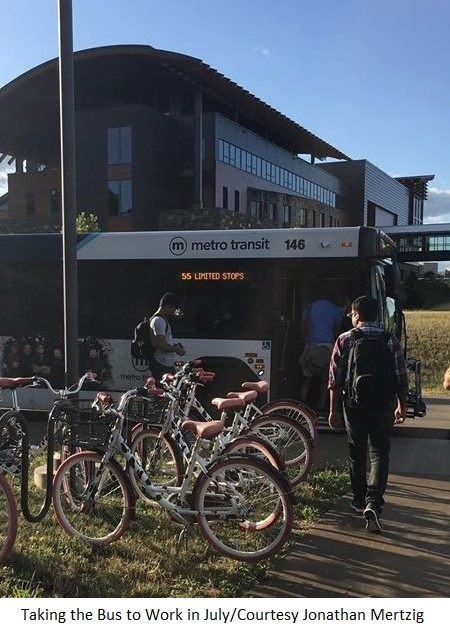

Public Transit and The 2020 Dane County Board Elections
Susan De Vos - March 29, 2020

In the Spring of this and other even-numbered years, Dane County elects Supervisors for the next two years. All 37 of them. Does that matter for public transportation? Not so far, but things could and should change. Almost half the seats on the County Board will be occupied by someone new.
This piece surveys whether candidates mention "transportation" an environmental or social issue of relevance to their participation in county government.
Transportation as Part of a Significant Environmental Issue Facing Dane County
Of the 43 candidates running for office, only four clearly mentioned transportation when discussing significant environmental issues facing the county: Chawla, Bayrd, Andrae and Bare. For instance, Chawla's website reads in part: The science is clear: global warming is the existential crisis of our time. We need a broad transportation policy, beyond just the automobile, that focuses on connecting all our communities in Dane County. In the League's document itself Bayrd replies to the question about environmental issues by saying: Reduce fossil fuel use by supporting mass transit and retrofitting / developing green buildings. , Andrae's reply there includes: We should also continue to shift to alternative modes of transportation, including use of bike trails and public transit. Finally Bare's reply in the League's document is: As a quickly developing County, we must incentivize sustainable and environmentally-friendly transportation infrastructure, ...
Other candidates mention important issues as well of course such as flooding, water quality, runoff and lake level. Oftentimes, such issues are linked to the more general issue of climate change. There is no question that those are important environmental issues in an area rife with lakes and marshland. Veldran (District 7) even mentions the production of CNG from county landfill. But a common blind spot seems to be that per capita carbon emissions in the Madison Area keeps increasing every year, in large part due to an increase in Vehicle Miles Traveled: Emissions Report: Cars Are Still Our Biggest Problem. Tackling flood-causing climate change needs to include a serious effort to shift us away from our current over-reliance on the automobile.
Transportation as Part of an Important Social Service/Criminal Justice Issue Facing Dane County Of the 43 candidates, only seven clearly mentioned transportation when discussing significant social issues facing the county: Wegleitner, Chwala, Bayrd, Andrae, Gray and Doolan. But that assessment would seem even less informative than the one regarding the environment because one derives the sense that others would approve of greater county financing of non-automobile transportation modes IF someone else took the lead in proposing something. Wegleitner mentions fare-free transit on her website. Chwala states that Transportation investments must use an equity lens ... on his. Bayrd mentions the need for transportation to help empower community voices in her answer to the League. Andrae mentions improving access to services. Gray states on his website: I will advocate for investment in our infrastructure and champion opportunities for public transit, a necessity as Dane Countys population continues to grow dramatically. And to the League again, Doolan also mentions the importance of access, perhaps inadvertently also emphasizing transportation's importance to both urban and rural areas: Access to services is difficult at best for rural residents. Infrastructure issues, reliable transportation needs, ... Fuzzier responses warrant mentioning. In relating a little pertinent background, Elizabeth Doyle (District 1) mentions that she had some work experience in transportation. What kind of transportation is left unclear although she shows a picture of someone riding the bus on her Facebook page. Alex Joers of District 9 explicitly cites public transportation as a County Board issue. And given his mention of transportation's importance to county development in reply to a question about environmental issues, one might easily surmise that Mike Bare (District 32) chose not to redundantly mention public transportation again when speaking about social services/criminal justice issues.
In conclusion, are we at a turning point regarding county involvement in non-auto transportation? Some years ago when Robin Schmidt was the supervisor for Monona (District 24) and Chair of the Public Works and Transportation Committee, she had a Transit Subcommittee that held listening sessions throughout the county. Based on the findings, she was able to get an amendment into the 2016 Capital Budget for $1.5 Million. Not only was that money never spent but the county has since added $28 to a Vehicle Registration Fee, revenue from which it spends liberally on roads while allocating nothing for public transit. Will such subversion continue or will Dane County now have the leadership it needs to move us toward a high-capacity multi-modal transit system?
|